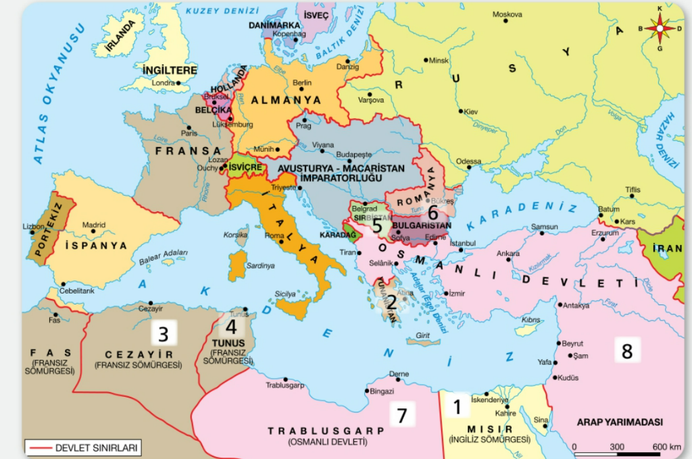

Haritadaki nabız gibi atan noktalara tıklayarak tarihi keşfedin.
Milliyetçilik akımıyla, Avrupalı devletlerin de kışkırtması sonucu kaybedilen bölgeler:
Avrupalı devletlerin hammadde, pazar arayışı ve stratejik hedeflerle işgal ettikleri bölgeler:
